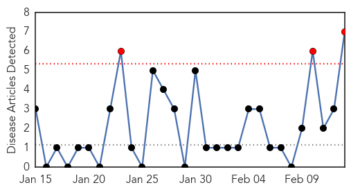
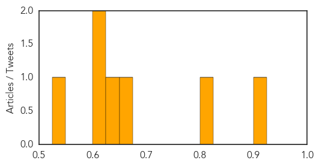

Cholera
30-Day Web Trend
0 alerts, 1 warnings

30-Day Twitter Trend
0 alerts, 0 warnings

Article Locations

Article Confidences

Top Articles:
Top Tweets:
-
No tweets found for Feb 13, 2015
Hepatitis
30-Day Web Trend
3 alerts, 0 warnings

30-Day Twitter Trend
0 alerts, 0 warnings

Article Locations
Article Confidences
Top Articles:
- 0.903
- Health warning over frozen berries linked to hepatitis A in Australia
- 0.809
- Nanna's frozen berries recalled over Hepatitis A link
- 0.653
- Berries linked to hepatitis scare
- 0.628
- Help for medically underserved
- 0.624
- Door-to-door campaign linked hepatitis C patients to care
- 0.616
- Xeljanz (tofacitinib tablet) Drug
- 0.538
- Should you vaccinate your pups?
Top Tweets:
-
No tweets found for Feb 13, 2015